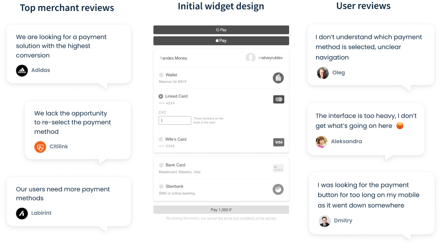
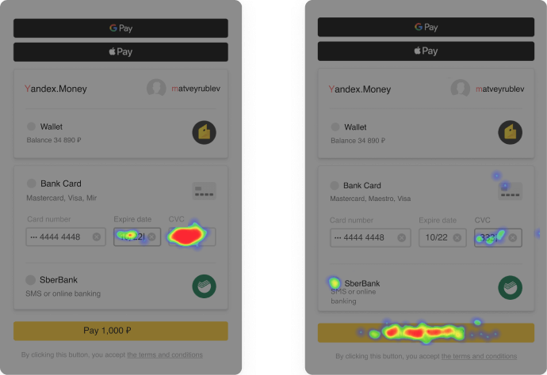
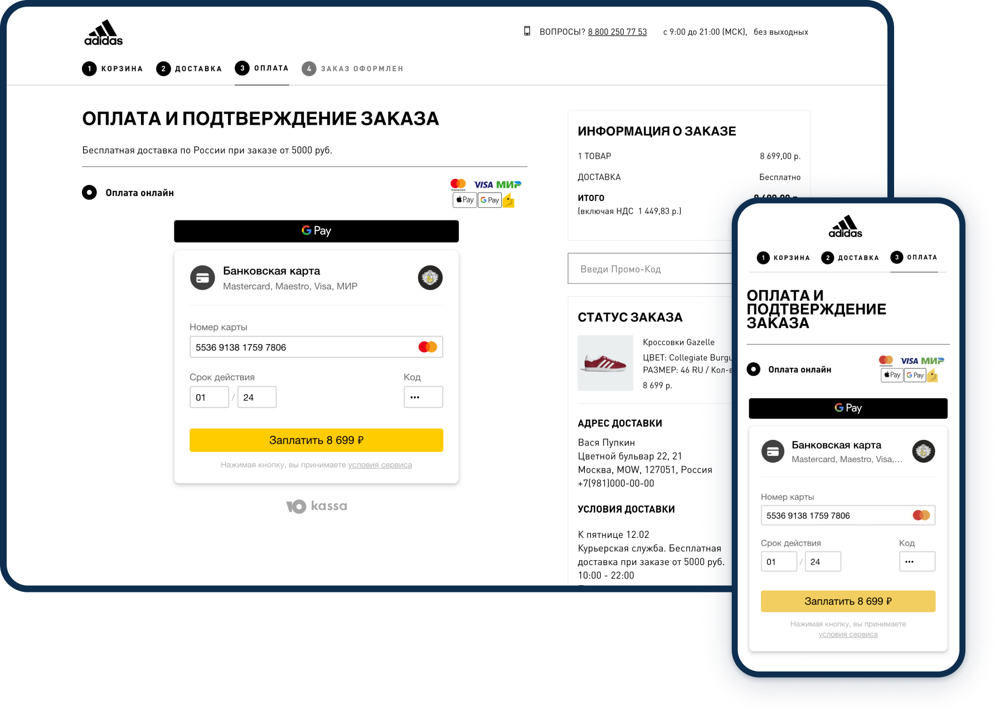
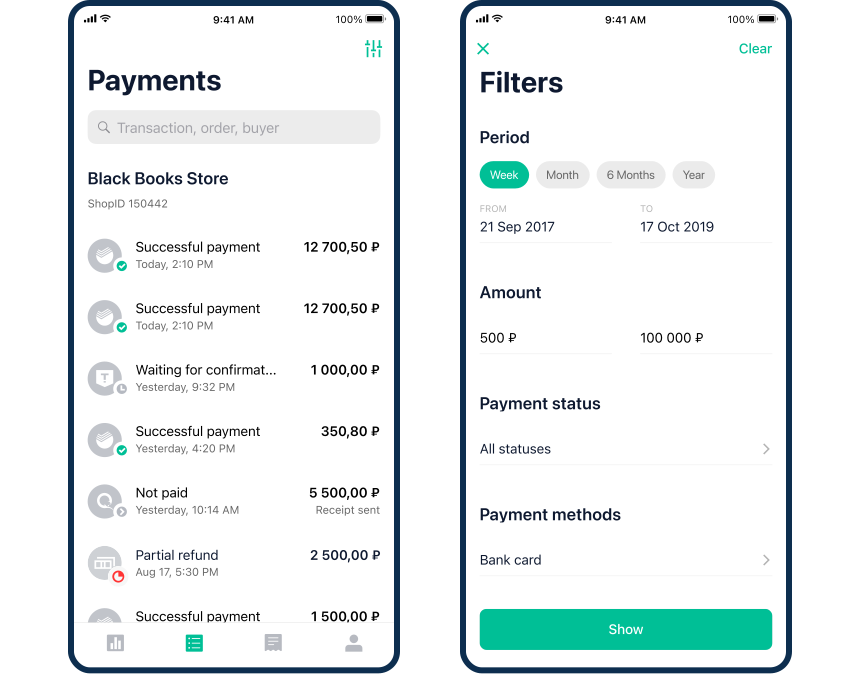
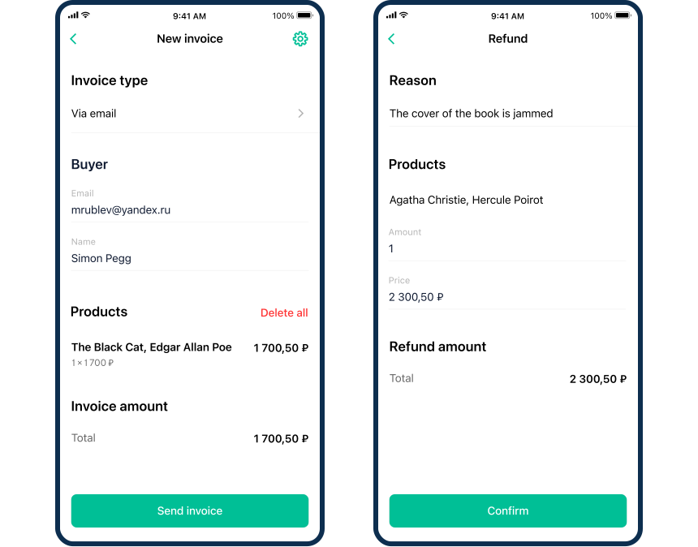
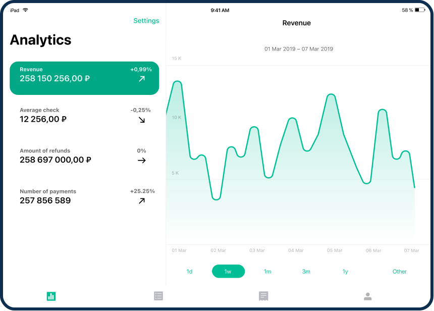
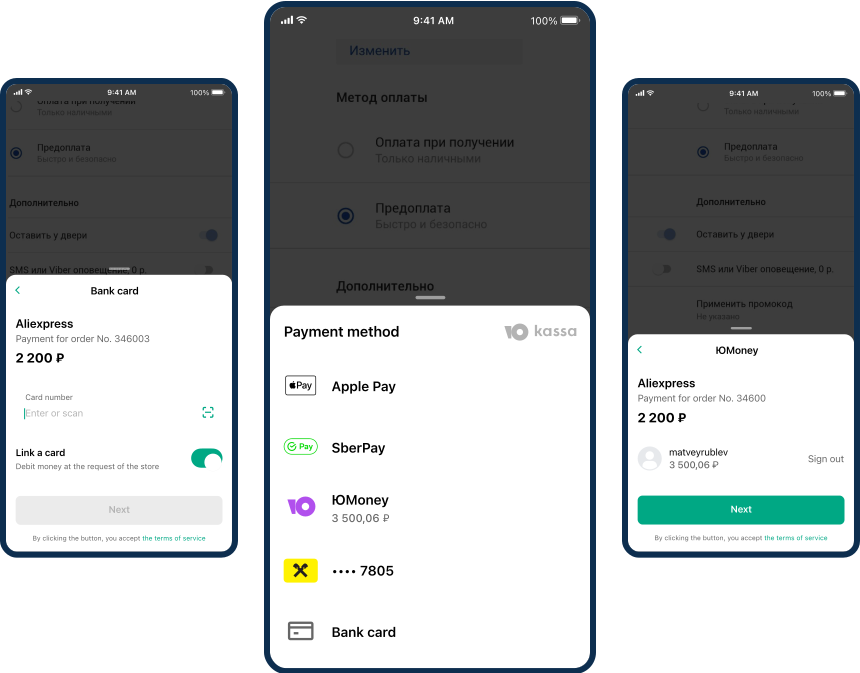

Scope of work
During my work, I redesigned projects such as the Embedded checkout form (Widget), Redirect form and Mobile SDK. Also, I created design for YooKassa managment app for business.
Responsibilities
- conducting user researches: interviews and usability testings;
- taking an active role in the sprints planning for the front-end team for effective production of services and using scrum methodology;
- developing a design system;
- mentoring new product designers.
Checkout widget redesign

YooMoney widget is the company's latest payment acceptance solution. It's a ready-made form for websites that provides seamless payments without switching to other tabs. The widget is used by Adidas & Reebok, iHerb, Renault and other big names.
Problems. Quality user testing
Series of accumulated requests from businesses and users served as the incentive for the redesign. In the beginning, business requirements were collected:
- improve conversion rate;
- add new payment methods as SberPay and linked cards;
- add the ability to brand the appearance;
- improve scalability and add re-select payment methods.
User testing helped to identify the main UX design problems:
- improve highlighting of the selected method;
- fix the location of the payment button;
- make it easier to fill out a bank card details.
Quantitative user testing
The heatmap confirmed the concerns users expressed in their interviews. For instance, some of the users failed to understand which payment method was active and where they should click to commit the payment.
New concepts

To cover all of the widget redesign goals, three prototypes were made. Each of them was quantitatively tested, compared to the old design. The best version was selected as the final one.
Redesign results
- major product and UX issues are closed;
- conversion rate increased more than 5%;
- new features: loyalty, scalability, re-election etc.
Additional goal — the concept of the widget was re-used in more than 8 company projects.
Real widget examples
More than thousand of merchants integrate the widget to their websites — from little stores to multi-million services.
Full case on Behance
You can find a more detailed case widget redesign on Behance.
Creating YooKassa app for business

YooKassa app is a payment management center for merchants. It's an easy way to manage payments, issue invoices, make refunds, monitor payment and invoice analytics.
Problems
Users of the YooKassa did not have the opportunity to monitor the statistics of their sites on mobile devices, because the site with the personal account of YooKassa does not have an adaptive version. Many requests were received from merchants for the mobile version and it was decided to make a mobile application on iOS and Android and tablet version for iPad.
During interviews with users, the main features for the application were identified:
- analytics for payments and invoices;
- full control over payments with filtering;
- refunds and fast invoicing.
Solution
Analytics

Full control over payments: confirm or cancel them and browse payment history with search and details for each transaction.

Fast invoicing via email, a text message, or a link. Refunds: full or partial and refund history with search

There were a lot of requests from users for the tablet version of the app
Launch results
- quick and convenient access to the merchant's personal account with main feautures on mobile and tablet devices;
- app rating in the App Store 4.7;
- more than 100,000 downloads for all time.
Full control over payments: confirm or cancel them and browse payment history with search and details for each transaction.
Fast invoicing via email, a text message, or a link. Refunds: full or partial and refund history with search
There were a lot of requests from users for the tablet version of the app
Mobile SDK Redesign
YooMoney mSDK is mobile library that allows you to integrate payment acceptance into mobile apps on iOS and Android. It works as an extension to the YooMoney API.
Problems
First version of mSDK was made more than 5 years ago and hasn’t chance since that time. During this time, a lot of requests from businesses have accumulated and obvious problems in UX have been noticeable.
In the process of research, users were surveyed about the current version, collecting product needs and technical limitations from developers. The research results were analyzed, problems were identified and the following goals for improvement were identified:
- simplify payment methods;
- cimprove the card payment method;
- add new payments methods like SberPay and linked cards;
- add brand customization.
Solution
Prototypes are assembled, tested, modified, and re-tested to a successful version. Visual design was created based on the design system.

List of payment methods

Bank card and different input states

YooMoney wallet method

Brand customization and dark theme
Redesign results
- simplifying the payment logic and confirmation;
- conversion rate improvement by 9% for bank card payments, which is the main payment method;
- adding new features, for example, SberPay;
- improving brand customization and adding a dark theme.
Other jobs

“The most expensive Russian multinational company in IT”, according to Forbes

Engaging in the design and development of personal projects with a small team
Analytics for payments and invoices: key metrics of your business always at hand